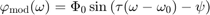
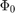
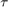
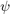
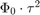
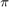
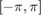
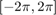
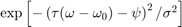
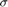

G-MIIPS
Gmiips is a matlab class for simulating femtosecond laser pulse compression using Multiphoton Intrapulse Interference Phase Scan (MIIPS).
MIIPS is a pulse characterization technique based on Second Harmonic Generation (SHG) and femtosecond pulse-shaping [1,2]. Gated-MIIPS, or simply G-MIIPS, is a more accurate version of MIIPS, suitable for broadband and highly distorted pulses [3].
Contents
Brief Introduction to MIIPS
MIIPS is based on the idea is that the SHG intensity at a certain frequency is maximum if, at that frequency, the second derivative of the spectral phase is null [1,2].
The second derivative of the spectral phase with respect to the angular frequency is also called group delay dispersion or simply GDD.
A MIIPS measurements consists of modulating the spectral phase of the laser pulse while simultaneously recording SHG spectra. The modulation function is typically a sinusoid which is scanned across the laser spectrum. By stacking together all the measured spectra one obtains a map with on one axes the frequency and on the other axes a scanning parameter. These kind of data are known as "MIIPS traces" because they contain well defined traces where the SHG is maximum. The analysis of the position of the MIIPS traces gives an estimate of the GDD for each spectral component of the laser pulse.
The modulation function can be written as:

where  is the modulationAmplitude,  is the modulationFrequency (expressed in units of time) and  is a phaseArray. The sin function can be optionally replaced with a pseudosinusoid, which gives more accurate results (see A.Comin, Applied Physics B, 2015).
The modulation parameters should chosen such that:
- is of the same order or smaller than the Fourier limited pulse duration. Smaller values give more accurate results;
- the product  must be greater that the GDD over most of the laser spectrum;
- is an array covering at least a range of , for example  or . The number of elements of the array defines the minimum value of the GDD which can be measured.
Brief Introduction to G-MIIPS
G-MIIPS is based on the observation that MIIPS is not very accurate when measuring broad-band pulses. The accuracy can improved by reducing the bandwidth of the laser using an amplitude 'gate', which is scanned across the laser specrum, alongside the phase modulation [3].
The most common choice for the scanning gate is the Gaussian function:

The gate width  is usually set to about one radian. Narrower values give higher accuracy, but also reduced SHG intensity, so experimentally the gate width must be chosen taking into account the signal-noise ratio of the detected SHG signal. It is also important to realize that, when the gate width is reduced, the MIIPS trace becomes ticker, so that it might be necessary to increase the GDD range by increasing the modulation amplitude .
Gmiips Class Requirements
For using the Gmiips class , the LaserPulse class must be also installed in the computer. The LaserPulse class is open source and can be downloaded on GitHub.
Gmiips Class Syntax
A Gmiips object can be created using the commands:
m = Miips(inputPulse, amp, tau, phi) % for simulating a MIIPS iteration m = Gmiips(inputPulse, amp, tau, phi) % for simulating a G-MIIPS iteration mg = Gmiips(inputPulse, amp, tau, phi, [name], [value], ...) % for simulating MIIPS or G-MIIPS with specified parameters.
where inputPulse is LaserPulse object, and the other parameters have the meaning defined above.
Standard MIIPS can be also simulated using the Gmiips command and setting the optional argument gateWidth to [] or to Inf. Other options are described in the documentation of the Gmiips class.
GMiips Class Properties
After a Gmiips object is initialized, several quantities are automatically calculated. Among them:
- miips.trace contains the SHG map in function of frequency and phase.
- miips.retrievedGDD is the GDD retrieved by Gmiips
- miips.retrievedPhase is obtained from miips.retrievedGDD via double numerical integration, by setting the integration constants to zero.
Examples
More information and examples of the Gmiips class can be found in the following files:
- Gmiips_2nd_order.m (source)
- Gmiips_2nd_order_iterative.m (source) simulation of Gmiips with 2nd order spectral phase
- Gmiips_3nd_order.m (source) simulation of Gmiips with 3nd order spectral phase
- Gmiips_4th_order.m (source) simulation of Gmiips with 4th order spectral phase
- Gmiips_5th_order.m (source) simulation of Gmiips with 5th order spectral phase
- Gmiips_phase_step.m (source) simulation of Gmiips with a step in the spectral phase
- Gmiips_analysisMethod.m (source) comparison of two method for analysing MIIPS traces: peak-finding and weighted average
- Gmiips_pseudo_sinusoids.m (source) comparison of different modulation functions
References
[1] Dantus, M.; Lozovoy, V. V.; Pastirk, I. Laser Focus World 2007, 43 (5), 101–104.
[2] Xu, B.; Gunn, J. M.; Cruz, J. M. Dela; Lozovoy, V. V.; Dantus, M. J. Opt. Soc. Am. B 2006, 23 (4), 750–759.
[3] Comin, A.; Ciesielski, R.; Piredda, G.; Donkers, K.; Hartschuh, A. J. Opt. Soc. Am. B 2014, 31 (5), 1118–1125.